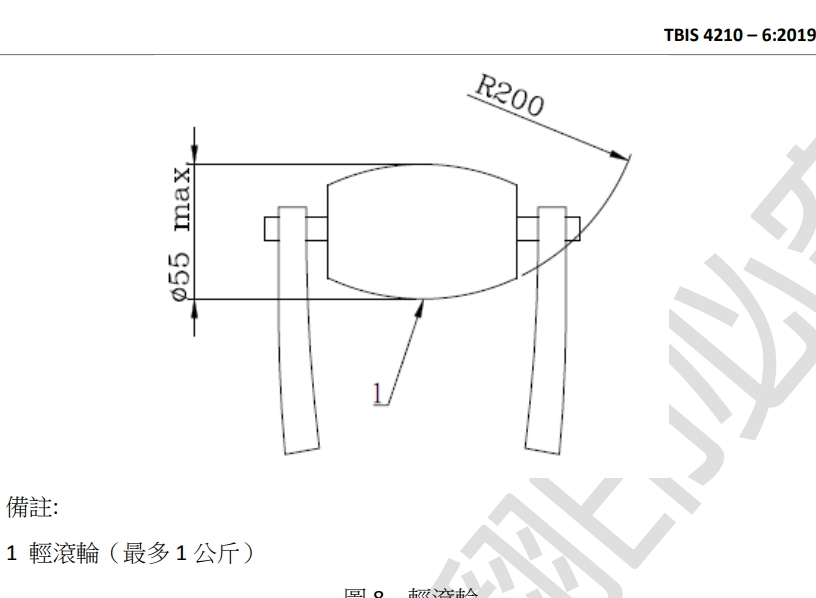

起源:我的同學中有在騎腳踏車的同學，看到他們在其叫踏車時想到之前有看過有關於腳踏車衝擊測測試機的影片，所以這次決定來嘗試設計一個這樣的測試機構
參考規範 ISO 4210 第六章 4.1車架-衝擊測試(落槌衝擊) 在測試治具上安裝重1公斤滾輪，如下圖，將重22.5公斤的落槌至於滾輪上，滾輪則位於前叉尾端，將落錘升起治距離"h"，釋放落錘使其錘職下落

第五:找組員、討論主題
第五、六周:繪製零件圖
第七、八周:修改並測試
第九周:報告